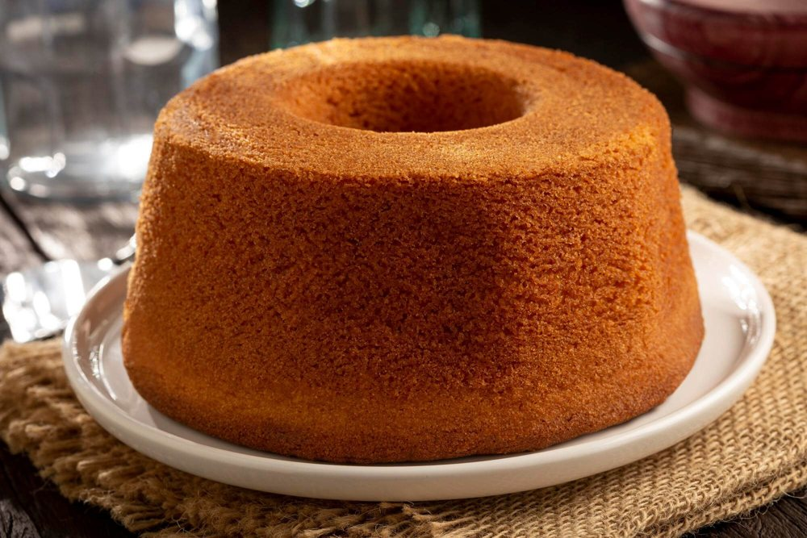

Doces · Tortas e bolos
Bolo merenda

Ingredientes
- ¾ xícara de manteiga
- ¾ xícara de açúcar
- 3 gemas
- 1 ½ xícara de farinha de trigo
- 1 colher (chá) de fermento em pó
- 2 colheres (sopa) de leite
- 3 claras
- Manteiga para untar
Modo de preparo
- Preaqueça o forno em temperatura média (200 °C). Bata a manteiga na batedeira até ficar cremosa. Acrescente o açúcar aos poucos, batendo sempre. Junte as gemas, uma de cada vez, e continue a bater até formar um creme claro e fofo.
- Desligue a batedeira e adicione a farinha de trigo peneirada com o fermento em pó. Vá misturando com uma colher de pau e acrescentando o leite aos poucos, até obter uma mistura homogênea.
- Bata as claras em neve e acrescente à massa, misturando delicadamente para não perder volume.
- Unte com manteiga uma fôrma de abrir com 21 cm de diâmetro.
- Coloque a massa na fôrma e leve ao forno preaquecido até dourar (cerca de 30 minutos). Retire do forno, deixe esfriar, desenforme num prato e congele.
Observação
Se você quiser congelar o bolo em porções, corte-o em fatias, embale cada uma em filme plástico e coloque-as num saco plástico; retire o ar, vede bem, etiquete e congele. Congelamento: cubra o bolo com plástico e leve ao freezer até congelar; embrulhe-o em filme plástico ou papel-alumínio e coloque num saco plástico, retire o ar e vede bem, etiquete e congele. Descongelamento: em temperatura ambiente por 2 horas. Variações: para um bolo de goiabada, distribua ½ xícara de cubinhos de goiabada na massa, misture e coloque a massa na fôrma untada. Para um bolo de chocolate chips, misture à massa ½ xícara de gotas de chocolate ou de chocolate meio amargo picado.